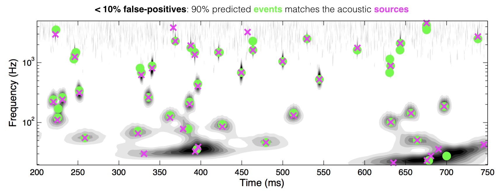

Project Depot
Structure extraction & pathway visualization of large datasets, using statistical & time-frequency signal analysis

1 / 3
Acoustic event detection algorithm which combines wavelet analysis, multi-correlation & pattern recognition

2 / 3
Event-conditioned signal filtering, statistics & ensemble averaging reveal structures & patterns of interest
3 / 3
Pattern Extraction and Problem Solving through
Signal Processing and Algorithm Design
© 2017 Melanie Kan